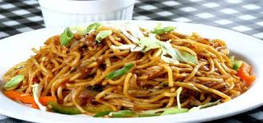

Chinese Fried Noddle (Plain Chow Mein)

INGREDIENTS
- 500g noodles
- 40g dried beancurd sticks
- 60g fresh mushrooms
- 60g winter bamboo shoots
- 100g flowering cabbage
- 10g scallions
- 5g gingers
- 6g salt
- 3g monosodium glutamate
- 4g soy sauce
- 10g sesame oil
- 35g peanut oil
PREPARATION
- Cut the mushrooms into slices, flowering cabbage into sections and bamboo shoots into pieces.
- Soak the dried beancurd sticks with warm water, wash them, then chop into pieces.
- Slice scallions and gingers into filiform pieces after removing their peels. Set them aside for later use.
COOKING METHOD
- Cook the nookles until they are well-done. Put them out and leave them to cool.
- Heat up the wok with peanut oil. Then add the noodles and stir-fry until they take on a golden color.
Dish up and remove the oil.
- Get another wok. Spread a little peanut oil, and heat the wok to seventy to eighty percent hot.
- Drop the filiform scallions and gingers to stir into the wok.
- Add mushrooms, dried beancurd sticks, fresh bamboo shoots, and flowering cabbage and fry them thoroughly.
- Add the cooking wine, soy sauce, refined salt, and light soup and bring to a boil.
- Mix the fried nookles in and stir-fry together. Turn down the heat and braise with a cover for a while.
- Put in the monosodium glutamate and drop the sesame oil, and then the dish is done.